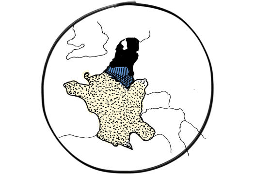

Fris en modern,
maar wel vertrouwd
De grootste gratis 'zoekertjessite' van Belgie is vernieuwd.
2dehands.be: waar Belgie tweedehands producten koopt en verkoopt
Sinds de lancering in 1997 is 2dehands.be uitgegroeid tot de grootste en populairste vraag- en aanbodwebsite, of naar eigen zeggen ‘zoekertjessite’ van België. Iedereen kan er gratis tweedehands (en nieuwe) producten kopen en verkopen. Er staan maar liefst vier miljoen advertenties online en dagelijks bezoeken meer dan 650 duizend mensen de website. Begin 2014 werd 2dehands.be onderdeel van de wereldwijde eBay Classifieds Group.
Altijd, overal en op elk apparaat
Het team van 2dehands.be zag steeds meer mensen via smartphones en tablets naar de website komen. Toch was de gebruikservaring voor tablet- en smartphonegebruikers nog niet optimaal. Om ervoor te zorgen dat 2dehands.be klaar is voor deze groeiende groep gebruikers, werden wij ingeschakeld om de website geschikt te maken voor dit soort apparaten. Zo kunnen gebruikers straks niet alleen vanuit huis, maar altijd en overal ter wereld hun favoriete ‘zoekertjessite’ bezoeken.
2dehands.be was toe aan een:
-
Responsive design
geschikt voor alle apparaten en schermformaten
-

Frisse uitstraling
modern en overzichtelijk, maar wel vertrouwd
-
Snelle ervaring
ook met een slechte verbinding of oud apparaat goed te gebruiken
-
Betaalproces
snel en eenvoudig betalen
voor promotie van advertenties -

Meertalige website
een consistent ontwerp
geschikt voor vier domeinen
Alle krachten gebundeld

Vanaf dag één zijn we gaan scrummen, waarbij we tegelijkertijd van start gingen met interactieontwerp, visual design en front-end development. De kracht van dit project was dat we met alle disciplines dicht op elkaar zaten en nauw konden samenwerken met het team van 2dehands.be. Door het snelle schakelen hadden we in de eerste sprint van zes weken al veel bereikt. Zo hadden we in die periode een ontwerprichting in visual design vastgesteld en een interactieontwerp gemaakt voor het gros van de pagina’s. Ook hadden de front-end developers een goede basis opgezet in de front-end guide.
Fris en modern, maar wel vertrouwd
Hoewel 2dehands.be al jarenlang de favoriete vraag- en aanbodwebsite is onder de Belgische bevolking, kon de website wel een fris jasje gebruiken dat meer bij deze tijd past. Hierbij moesten we voorzichtig te werk gaan, want we wilden niet het vertrouwde gevoel bij de gebruikers weghalen. Daarom maakten we drie ontwerpvoorstellen voor de belangrijkste pagina op de website: de zoekresultatenpagina.
Deze legden we voor aan de 200 ‘adviseurs van 2dehands.be’; een representatieve groep actieve gebruikers. Door hun input als basis te gebruiken hebben we het ontwerp nauwkeurig op de bezoeker kunnen afstemmen. Hierdoor was het mogelijk om echt een vernieuwende en frisse stijl neer te zetten, die wel voor de gebruikers vertrouwd en herkenbaar blijft.
Een optimale gebruikservaring
Bij het realiseren van het nieuwe ontwerp zochten we naar een evenwicht tussen het vertrouwde proces en het toevoegen of verbeteren van functies om de gebruikservaring te optimaliseren. Tijdens het ontwerpproces schakelden we regelmatig gebruikers in. Zij hielpen ons bijvoorbeeld al vroeg in het proces bij het valideren van de eerste ontwerpideeën. Deze manier van nanotesten hebben we veel gebruikt tijdens het ontwerpproces. Aan de hand van kleine testjes en kleine iteraties werd het ontwerp steeds een stukje beter.
Een aantal functies
waar we trots op zijn
Advertenties sneller plaatsen

Slimme suggesties
Dankzij het nieuwe ontwerp kunnen gebruikers nu makkelijker en sneller advertenties plaatsen. Voorheen was het weleens moeilijk om te bepalen in welke categorie een advertentie thuishoorde. Dit is verbeterd doordat het systeem aan de hand van de advertentietitel bepaalt in welke categorie de advertentie thuishoort. Dit werkt niet alleen sneller, maar met deze functie kun je ook de advertentie veel beter vinden.
Tips
Plaats je een advertentie, dan krijg je ook gelijk tips om het artikel beter te verkopen. Dit kan door bijvoorbeeld meerdere foto's toe te voegen. Op die manier kunnen ook kopers beter zien wat ze kopen.
Advertenties sneller vinden
De zoekbalk
Het is makkelijker geworden om het grote aanbod van advertenties te doorzoeken. De zoekbalk is op elke pagina aanwezig, waardoor je nooit terug hoeft naar de homepage. Heb je geen zoekterm, dan kun je nu ook direct vanuit de zoekbalk door alle afdelingen heen bladeren.
Slim gebruik van kleine schermen
De website is geoptimaliseerd voor kleinere schermen. Op een slimme manier worden de belangrijkste opties getoond, en worden de minder belangrijkste opties verborgen.
Verfijnopties
Hieronder wordt het 'voor' en 'na' van de zoekresultatenpagina in beeld gebracht. Zo zijn de verfijnopties van de zoekopdracht nu aan de linkerkant van de pagina te vinden. Voorheen stonden deze aan de rechterkant. Het nieuwe onderdeel ‘Uw zoekopdracht’ vormt een samenvatting van de zoekopdracht. De lijst van alle afdelingen is naar de zoekbalk verplaatst.
Geoptimaliseerd contactformulier
Het contactformulier heeft een nieuw jasje gekregen. De advertentiefoto's zijn groter, de titel en prijs zijn duidelijker aanwezig en de bewaarknop heeft nu een prominentere plek.
Technieken voor een soepel proces
Tijdens het ontwerp- en ontwikkelproces gebruikten we verschillende technieken die we ons eigen hebben gemaakt. Een paar voorbeelden waar we trots op zijn:
Front-end guide: alle stakeholders op de hoogte van alle website-elementen
Bij dit project werkten we nauw samen met De Voorhoede: ons zusterbedrijf dat gespecialiseerd is in front-end development. Direct met front-end developers samenwerken heeft het voordeel dat je minder hoeft te tekenen en je eerder in html ontwerpen ‘live’ kunt bekijken en testen. Veel van het responsive gedrag (= de content passend maken in elk scherm) kan de developer, in nauw overleg met de ontwerpers, direct in html bepalen. Dit is mogelijk door te werken met een front-end guide. Op deze webpagina, die zichtbaar is voor alle stakeholders, wordt continu de actuele stand van de front-end gepubliceerd. Hierin wordt ook een stijlgids gegenereerd waar bijvoorbeeld de vastgestelde kleuren, lettertypes en iconen zichtbaar zijn. Op die manier heeft iedereen een helder overzicht van de stijlelementen waaruit de nieuwe website is opgebouwd. Tegelijkertijd is de guide een handvat voor een consistent ontwerp.
Snel, sneller.. misschien wel de snelste
website van België
Toegankelijkheid was een belangrijk uitgangspunt bij dit project. De website moet voor iedereen bruikbaar zijn: of je nu een oude browser, een langzame mobiele verbinding of een visuele beperking hebt. Dit vraagt veel van de techniek. Daarom hebben we gewerkt volgens het progressive enhancement-principe: eerst een minimale functionele versie aanbieden, en deze mooier en beter maken zodra we weten dat het apparaat waarmee je de website bezoekt dit aankan. Ook is de laadsnelheid essentieel als je te maken
hebt met een langzame internetverbinding of op een mobiele telefoon de website bezoekt. Doordat we zo snel mogelijk een functionele website tonen, kunnen gebruikers direct aan de slag. We hebben in ons achterhoofd gehouden dat iedere seconde telt wanneer je miljoenen bezoekers hebt die op elk moment kunnen afhaken. Ons werk, en dat van de Voorhoede, is uitgebreid gereviewed door de gerenommeerde Filament Group uit Boston en kwam goed uit de test. Het vernieuwde 2dehands.be is misschien wel de snelste website van België!
Great job! Best website we’ve
analyzed so far.
analyzed so far.
Vier verschillende domeinen,
één flexibele front-end
De website is via vier domeinen te gebruiken: 2dehands.be, 2ememain.be, tweedehands.nl en secondemain.fr. Hierbij moest rekening worden gehouden met Nederlandstalige en Franstalige teksten. Een flinke uitdaging voor een responsive website als deze, want een Franstalige tekst is vaak een stuk langer dan dezelfde tekst in het Nederlands. We hebben daarom een flexibele front-end gerealiseerd die op elk domein toepasbaar is.
Terugblik
Samen met het team van 2dehands.be hebben we op locatie aan het ontwerp gewerkt, wat zorgde voor een optimale samenwerking. Dit had een positieve invloed op de kwaliteit van ons werk. Zo was het mogelijk om snel te schakelen, goed op elkaar in te spelen en in korte periodes veel te bereiken. Hierdoor leerden we ook het merk en de klant veel beter kennen en begrijpen. Doordat we niet alleen aan het einde, maar ook al vroeg in het proces met echte gebruikers werkten, hebben we uiteindelijk een beter eindproduct kunnen realiseren.
-
De nieuwe website is een schot in de roos.
-
Frisser, duidelijker, overzichtelijker en herkenbaar.
-
C’est beaucoup mieux qu'avant, également plus rapide.
De adviseurs van 2dehands.be tijdens een bijeenkomst in Brussel